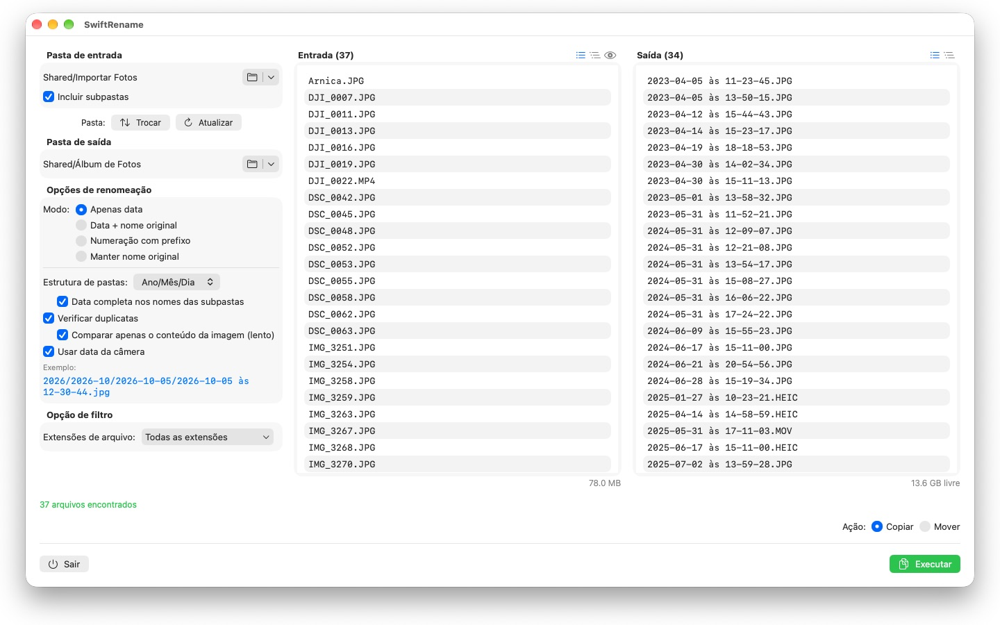
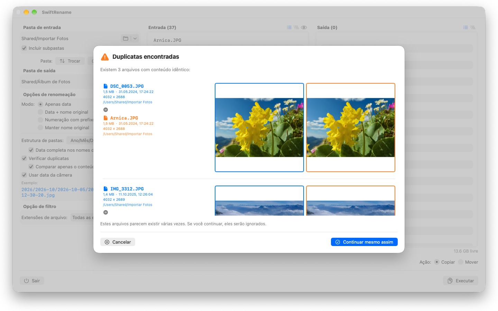

Renomeie centenas de fotos e arquivos de uma vez — pela data da câmera, numerados ou em pastas por ano e mês. Duplicados são encontrados e ignorados automaticamente.



O SwiftRename é uma ferramenta poderosa para renomear, copiar e mover arquivos em lote no seu Mac. Escolha uma pasta, defina como os novos nomes devem ficar, confira a pré-visualização ao vivo — e execute.
24 idiomas: Deutsch · English · Español · Français · Italiano · Nederlands · Português · Svenska · Norsk · Suomi · Polski · Čeština · Hrvatski · Magyar · Română · Türkçe · Русский · Українська · فارسی · ไทย · 日本語 · 한국어 · 简体中文 · 繁體中文
MODOS DE RENOMEAÇÃO
- Apenas data: nomeie os arquivos pela data deles (ex.: 2024-01-15 às 14-30-00)
- Data + nome original: coloque a data na frente e mantenha o nome original
- Numeração com prefixo: numeração sequencial com o seu próprio prefixo (ex.: Viagem_0001)
- Manter nome original: deixe os nomes intactos e apenas organize os arquivos em pastas
ESTRUTURA DE PASTAS
Organize os arquivos automaticamente em pastas por ano, mês ou dia — com a data completa no nome de cada subpasta, se preferir (ex.: 2026/2026-02/2026-02-20). Arquivos que abrangem várias décadas ganham pastas de década no topo. Ou escolha "Manter" para espelhar a hierarquia de subpastas da pasta de origem no destino.
DATA DA CÂMERA
As fotos e os vídeos recebem como nome o momento em que foram realmente capturados: o SwiftRename lê a data da câmera (EXIF) — de formatos RAW de todos os principais fabricantes de câmeras (Canon, Nikon, Sony, Fujifilm e muitos outros), além de HEIC, JPEG, PNG, TIFF e formatos de vídeo comuns. Se um arquivo não tiver data da câmera, a data de criação dele é usada.
DETECÇÃO DE DUPLICADOS
Os duplicados são detectados por tamanho e conteúdo do arquivo — independentemente da data de criação, de modo que a mesma foto com um horário diferente não escapa. Uma comparação de imagem opcional encontra até fotos que foram salvas novamente por outros apps. As miniaturas permitem comparar os dois arquivos lado a lado; os duplicados são ignorados automaticamente.
MAIS RECURSOS
- Copie ou mova com um clique — incluindo renomear no lugar, dentro da mesma pasta
- Acesso rápido às pastas de entrada e de saída usadas recentemente
- Inclua subpastas; veja as listas de arquivos em modo plano ou como árvore de pastas
- Filtre extensões de arquivo com seleção múltipla
- Pré-visualização ao vivo dos novos nomes antes de qualquer alteração
- Desfazer e refazer operações inteiras (Cmd+Z)
- Exibição de progresso com nome do arquivo e porcentagem — cancele quando quiser
- O espaço livre em disco é verificado antes de a operação começar
- Arraste e solte pastas direto do Finder
Tudo permanece no seu Mac. Sem conexões de rede, sem contas, sem coleta de dados.
- Requer macOS 12 ou posterior
- 24 idiomas
- Suporte: SwiftAppsBavaria@gmx.net
Mais Apps
sCollect
Organize música, filmes, audiolivros, e-books e outras coleções em uma biblioteca.
sCollectPlay
O player da biblioteca: reproduza música, filmes, audiolivros e podcasts diretamente de uma pasta, de um XML do iTunes ou de uma biblioteca do sCollect – sem alterar nada nas tags dos arquivos.
sName2Date
Gravar a data do nome do arquivo como data de captura em fotos, vídeos e gravações de áudio – para que um arquivo como IMG_20240115_103000.jpg fique na ordem certa em qualquer gerenciador de fotos.
sName2Date Lite
A edição para um arquivo por vez: gravar a data do nome do arquivo como data de captura em uma foto, um vídeo ou uma gravação de áudio, defini-la manualmente, passar o nome para a notação ISO e desfazer tudo com ⌘Z – os mesmos recursos do sName2Date, só que sem pastas inteiras.
sVectorLift
Abrir, ver e salvar clipart vetorial antigo como SVG – CorelDRAW, Windows Metafile e CGM.
sCollectPlay Lite
A edição enxuta do sCollectPlay: basta abrir uma pasta, um XML do iTunes ou uma biblioteca do sCollect e reproduzir música, filmes, audiolivros e podcasts – com playlists, faixas de áudio e de legendas, câmera lenta e avanço quadro a quadro. Uma fonte por sessão; o navegador de colunas, as playlists próprias e as fontes usadas recentemente ficam reservados à versão completa.
sBikeBridge
Analise seus passeios de bicicleta sem enviá-los para um portal: importe arquivos FIT de qualquer ciclocomputador que grave nesse formato, além de GPX e TCX. Os passeios ficam em uma biblioteca própria no Mac – com mapa, potência e frequência cardíaca, fotos e notas; a importação detecta duplicatas. Indicadores por ano ou mês e filtros por distância, ganho de elevação e duração tornam os passeios comparáveis. Se você quiser, o mapa também fica disponível offline.